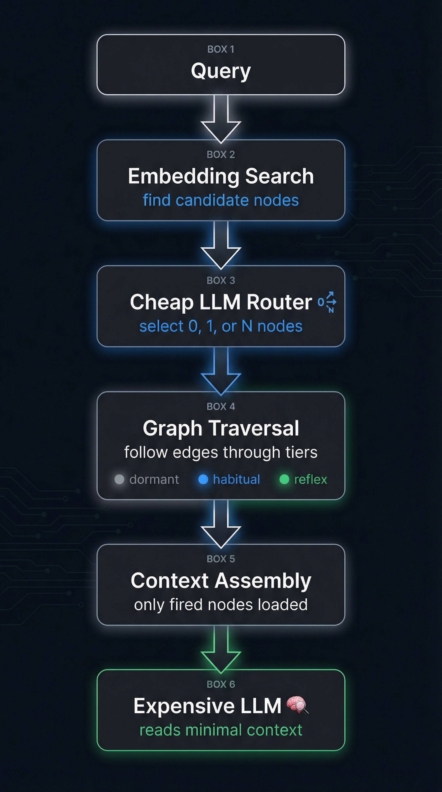
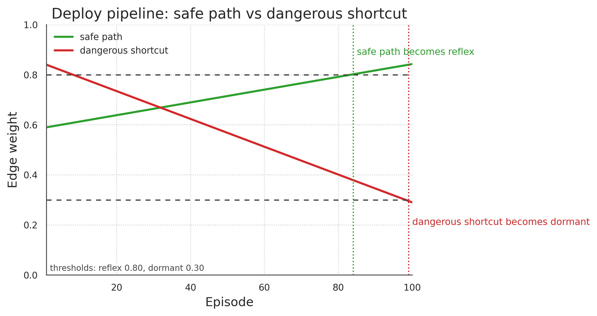
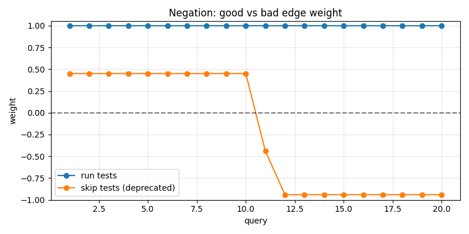
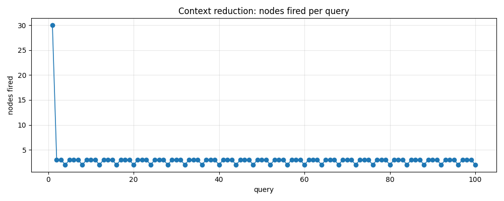
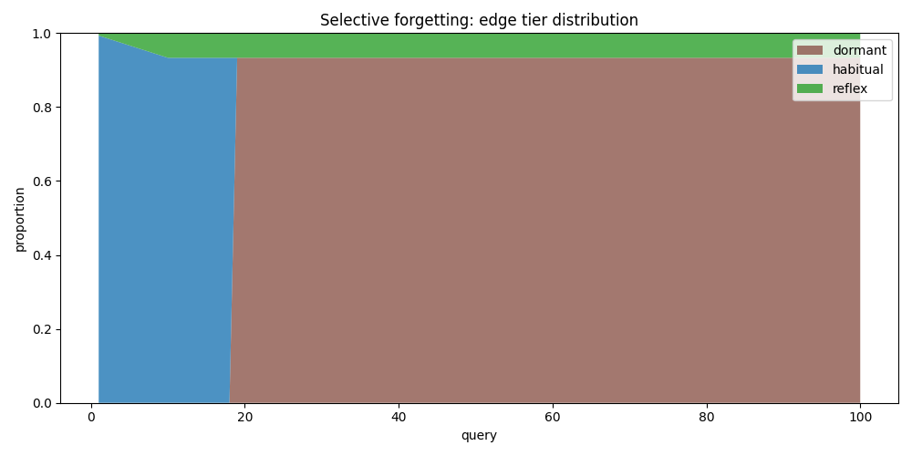
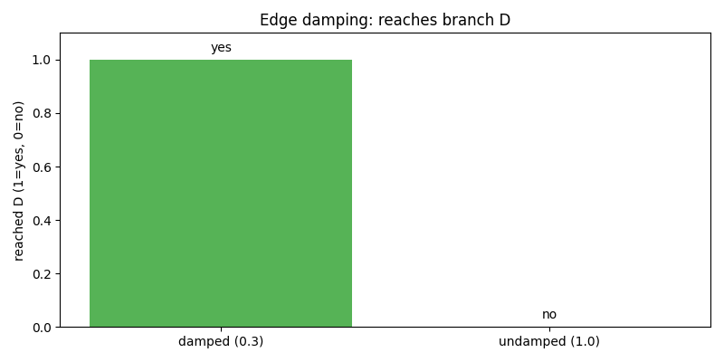
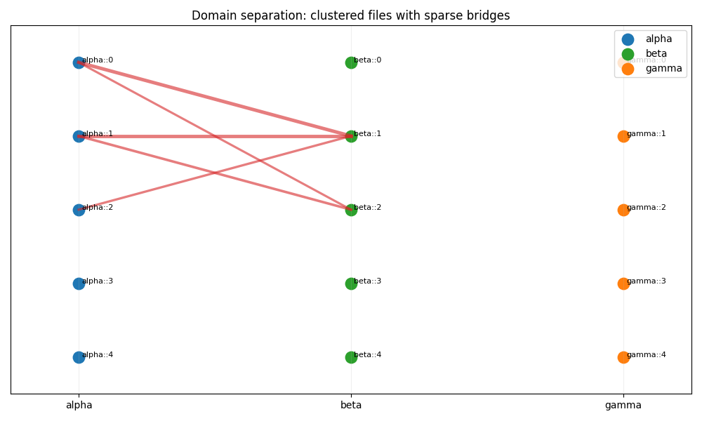
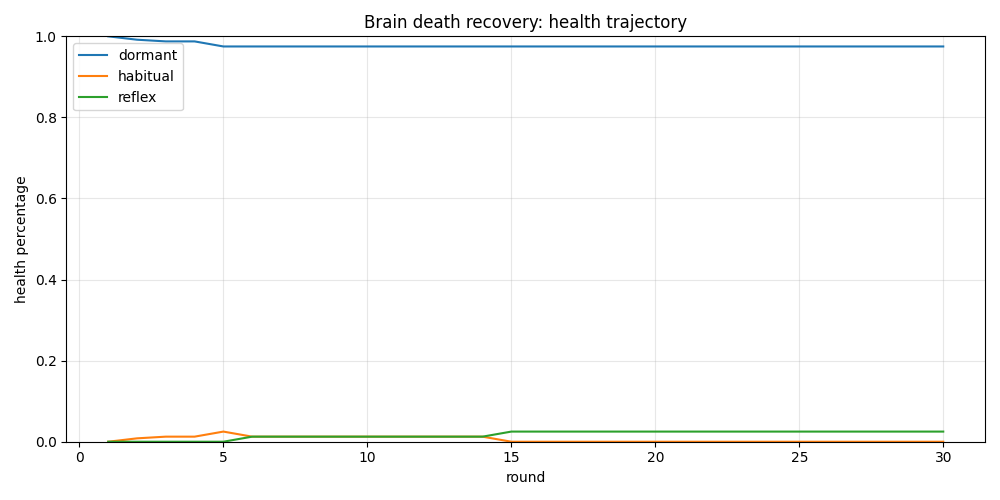
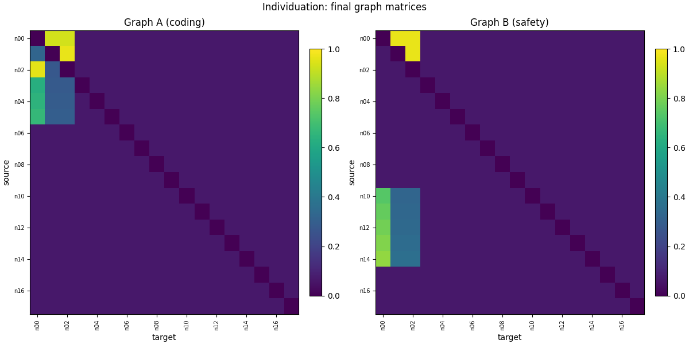

OpenClawBrain: TypeScript-First Brain Stack for OpenClaw
OpenClawBrain is now a TypeScript-first replacement with a package-first workspace and explicit runtime boundary ownership.
Fast boot starts from existing files, learned routing stays on the hot path, and async teacher learning runs off the hot path.
Runtime boundary
OpenClaw owns runtime. OpenClawBrain owns learning contracts.
OpenClaw owns runtime orchestration, fail-open behavior, and prompt assembly. OpenClawBrain owns contracts, event/export normalization, provenance, packs, activation helpers, compiler, and learner packages.
- Boot immediately from existing files; no full pre-scan gate before first useful routing.
- Human labels, self labels, and scanner/harvester labels are default-on parts of the normal loop.
- The learned route function runs on the hot path; async teacher updates stay off the hot path.
Proof boundary is explicit: mechanism-level workflow proof is published; live production answer-quality proof is not claimed yet. Reproduce the proof docs →
Current proof ladder
The strongest current evidence is still deterministic workflow-shaped: hot-path learned routing beats static baselines on held-out workflow queries, while async supervision and graph learning improve policy quality off the hot path.
Step 1
Synthetic sims
Mechanism-level checks for reward shaping, routing dynamics, inhibition, and learning curves.
Step 2
Workflow proof
Deterministic OpenClaw-shaped tasks with held-out queries, label streams, and learned-vs-baseline route-function comparison.
Step 3
Live production eval
Not claimed here yet. This page does not present live production OpenClaw answer-quality proof.
| Mode | Exact target success | Required-node coverage |
|---|---|---|
vector_topk | 0.00 | 0.00 |
pointer_chase | 0.25 | 0.38 |
graph_prior_only | 0.50 | 0.50 |
learned | 1.00 | 1.00 |
What This Proves
OpenClawBrain can learn a better route policy than vector retrieval, pointer chasing, or cold-start graph priors alone on held-out workflow-shaped queries.
What This Does Not Prove
It is not a live production OpenClaw eval, and it does not directly prove downstream answer quality on user tasks yet.
TypeScript package contracts + two-timescale learning are the heart of OpenClawBrain.
- Learned route function on hot path: deterministic, query-conditioned edge selection runs in the runtime request path.
- Async teacher off hot path: background supervision improves the route policy without adding latency to user-visible requests.
- Default-on label hierarchy: human feedback (highest weight) → self labels → scanner/harvester labels → async teacher labels.
- Continuous graph learning by default: structural updates, decay, and Hebbian co-firing run as live background behavior.
Read the latest: v12.2.6+ series: QTsim, policy learning, and evals. · Math appendix: labels → learned QTsim router · Full writeup

Why this exists
The reset this repo makes
OpenClawBrain is now TypeScript-first and package-first: fast startup from existing workspace files, live background learning, and explicit ownership boundaries between OpenClaw runtime and OpenClawBrain learning infrastructure.
| Pain | Fix in OpenClawBrain |
|---|---|
| Cold starts blocked by full-history prep before usable routing. | Boot from existing files immediately, then learn historical context continuously in the background. |
| Label collection is inconsistent and often optional. | Human labels, self labels, and scanner/harvester labels run as default inputs to learning. |
| Learning logic and runtime orchestration are tightly coupled. | OpenClaw runtime stays separate while OpenClawBrain packages own contracts, provenance, packs, compiler, and learner behavior. |
Proof boundary remains explicit: this page shows deterministic mechanism and workflow proof; it does not claim complete live production answer-quality proof yet.
Start here: openclaw integration · brains dashboard · workflow proof + benchmark harnesses
Quickstart (Package-First)
# Bootstrap the TypeScript workspace
corepack enable
pnpm install
pnpm check
# Build and release package artifacts
pnpm release:pack
# Public package surface
@openclawbrain/contracts
@openclawbrain/events
@openclawbrain/event-export
@openclawbrain/workspace-metadata
@openclawbrain/provenance
@openclawbrain/pack-format
@openclawbrain/activation
@openclawbrain/compiler
@openclawbrain/learnerOpenClaw owns runtime orchestration/fail-open/prompt assembly. OpenClawBrain owns contracts, normalized events/exports, provenance, pack format, activation helpers, compiler, and learner packages. Start from current files immediately; continuous learning updates routes in background. See README and REPRODUCE.md.
📝 NEW: Blog Post
New series: QTsim confidence mixing, ultimate policy gradient, and evaluation ablations
Four posts covering architecture, mechanism, proof plan, and operator rollout. March 2026.
Abstract
Standard retrieval, including lexical or embedding similarity matching, selects chunks independently per query and does not learn persistent routing over multi-step trajectories from outcome feedback. OpenClawBrain provides value on two axes: retrieval accuracy and context efficiency. It augments query seeding with a learned graph router over document chunks where nodes are chunks and edges are mutable signed pointers. For accuracy, graph structure enables better retrieval than flat embedding-only retrieval on repeated procedural paths. For efficiency, repeated outcomes compress context from 30 nodes to 2.7 in deployment simulation (91% reduction) and from 52--66KB to 3--13KB per query in production via trajectory learning.
OpenClawBrain vs GraphRAG/RAPTOR/Self-RAG
- OpenClawBrain: TypeScript package-first memory stack for repeated agent workflows, with learned routing on hot path and async teacher learning off path.
- GraphRAG: Strong at corpus-aware retrieval over explicit entity/document relationship graphs.
- RAPTOR: Strong at hierarchical chunking and summarization across large corpora.
- Self-RAG: Strong at deciding retrieval behavior during a single generation loop.
Best for: Use OpenClawBrain when you need always-on route learning and default-on label harvesting inside an OpenClaw runtime boundary; use GraphRAG/RAPTOR/Self-RAG when your primary requirement is corpus modeling or per-response retrieval control.
| System | Best for | Key behavior |
|---|---|---|
| OpenClawBrain | Repeated workflows in OpenClaw runtime | Hot-path learned route function plus background teacher/graph updates |
| GraphRAG / RAPTOR | Corpus structure and summarization | Retrieval quality from explicit graph/hierarchical corpus structure |
| Self-RAG | Per-response retrieval control | Retrieval gating and critique in a single response flow |
Key differences (OpenClawBrain): fast boot from existing files, default-on human/self/scanner labels, continuous graph learning (structural updates + decay + Hebbian co-firing), and explicit separation between mechanism proof and live product proof. See operator quickstart, math appendix, evaluation plan, and v12.2.6+ series.
Feature highlights
- TypeScript-first package surface:
@openclawbrain/contracts,@openclawbrain/events,@openclawbrain/event-export,@openclawbrain/workspace-metadata,@openclawbrain/provenance,@openclawbrain/pack-format,@openclawbrain/activation,@openclawbrain/compiler,@openclawbrain/learner. - Fast boot from existing files without a full-history pre-scan gate.
- Always-on background learning that prioritizes new incoming data first.
- Default-on human labels, self labels, and scanner/harvester labels feeding one learner loop.
- Continuous graph learning with structural modifications, decay, Hebbian co-firing, and bounded hot-path routing budgets.
- Honest proof boundary: deterministic mechanism/workflow proof now, full live production answer-quality proof not claimed yet.
What's new in the TypeScript reset
- TypeScript-first replacement: OpenClawBrain now presents a package-first workspace shape instead of a Python-first operational surface.
- Immediate boot behavior: runtime can boot from existing files without waiting for a full historical pre-processing gate.
- Always-on learning loop: background learning is default-on and keeps processing historical and incoming data continuously.
- Default label stack: human feedback, self labels, and scanner/harvester labels all feed the learner loop by default.
- Hot/off-path split: learned route function stays on the hot path while async teacher behavior stays off the hot path.
- Continuous graph adaptation: structural updates, decay, and Hebbian co-firing are standard background behavior.
Forward package surface
- Contracts and events:
@openclawbrain/contracts,@openclawbrain/events,@openclawbrain/event-export. - Workspace and provenance:
@openclawbrain/workspace-metadata,@openclawbrain/provenance. - Packs and activation:
@openclawbrain/pack-format,@openclawbrain/activation. - Compiler and learner:
@openclawbrain/compiler,@openclawbrain/learner. - Boundary ownership: OpenClaw owns runtime/orchestration/fail-open/prompt assembly while OpenClawBrain owns package contracts and learning machinery.
- Proof boundary: mechanism/workflow proof is current; full live production answer-quality proof is still pending.
1. The Problem
Memory retrieval should be about behavior selection, not nearest-neighbor matching. Every query should ask: which sequence of dependencies, safeguards, and operations is useful now, given previous outcomes? A static similarity index cannot determine this.
OpenClawBrain treats memory as a decision surface: a directed, weighted graph where edges represent route-level transitions. We evaluate behavior through simulations with only code-backed evidence and replace broad benchmarking claims with a note when those data are not in this suite.
2. The Graph
OpenClawBrain is a directed graph of chunk nodes with typed edges carrying bounded scalar weight. Implementations may store metadata (for example, edge kind and summaries) alongside the graph state.
from dataclasses import dataclass, field
from typing import Any
@dataclass
class Node:
id: str
content: str
summary: str = ""
metadata: dict[str, Any] = field(default_factory=dict)
@dataclass
class Edge:
source: str
target: str
weight: float
kind: str
summary: str = ""
metadata: dict[str, Any] = field(default_factory=dict)
A query creates seed nodes \(\mathcal S(q)\) and initial frontier. Fired nodes are the nodes visited in this traversal; only fired nodes are eligible for read/execution.

Tiering uses explicit precedence on each step: reflex, habitual, inhibitory, then dormant. Inhibition is a hard veto over support, not a soft penalty.
| Tier | Weight Range | Behavior | Expected Cost |
|---|---|---|---|
| Reflex | >= 0.6 | Auto-follow. | Near zero deliberation. |
| Habitual | 0.2 – 0.6 | Cheap routing decides whether to follow. | Low. |
| Inhibitory | <= -0.01 | Skips/ suppresses nodes. | Near zero. |
| Dormant | < 0.2 | Skipped unless directly re-seeded. | Zero. |
The graph is deliberately sparse in active retrieval because routing should remain selective. Dormant edges are not deleted; they can recover if feedback returns.
def qtsim_router(query, candidate_targets):
"""Policy hook for selecting habitual actions."""
...
return selected_targets
def choose_next(current_node, graph, qtsim_router, query, visited):
edges = graph.outgoing(current_node)
candidates, suppressed = [], set()
for edge in edges:
if edge.weight <= -0.01:
suppressed.add(edge.target)
continue
if edge.weight >= 0.6 and edge.target not in visited:
candidates.append((edge.target, edge.weight))
if 0.2 <= edge.weight < 0.6 and edge.target not in visited:
candidates.append((edge.target, edge.weight))
habitual = [t for t, w in candidates if 0.2 <= w < 0.6]
auto = [t for t, w in candidates if w >= 0.6]
selected = qtsim_router(query, habitual) if qtsim_router else auto
return [n for n in auto + selected if n not in suppressed and n not in visited]3. Learning Rule and Dynamics
A production-oriented objective is:
\[\min_{W}\; \mathbb{E}_{q\sim\mathcal{D}}[\mathrm{tokens}(F(q;W))] \;\text{s.t.}\; \mathbb{E}_{q\sim\mathcal{D}}[\tilde z(q)]\ge \rho,\; |F|\le B,\]
\[\tilde z\in\{0,1\},\quad z=2\tilde z-1\in\{-1,+1\}\]
In plain terms: minimize context tokens while maintaining retrieval success, with signed outcome \(z\) used in updates.
How the Policy Gradient Actually Works
For a fixed-node softmax policy, each chosen action increases its own logit and decreases competing logits in proportion to their current probability mass.
v12.2.1 also adds an autonomous self_learn path: agents can emit outcome-driven trajectories, and self_learn converts them into internal updates using existing TEACHING/CORRECTION flows without human feedback.
The accessible math
\[\pi_W(a\mid s=i)=\frac{\exp\bigl((r_{ia}+w_{ia})/\tau\bigr)}{\sum_{j\in\mathcal{N}(i)\cup\{\texttt{STOP}\}}\exp\bigl((r_{ij}+w_{ij})/\tau\bigr)}\]
At node \(i\), write \(\boldsymbol{\pi}_i\) for the full action distribution and \(\mathbf{e}_a\) for the one-hot vector at the chosen action. The true score function is:
\[\nabla \log \pi_W(a\mid i)=\frac{1}{\tau}(\mathbf{e}_a-\boldsymbol{\pi}_i)\]
- “what I chose” minus “what I expected to choose”: the term \(\mathbf{e}_a-\boldsymbol{\pi}_i\) compares action intent to policy mass.
- Chosen action: update size is \((1-\pi(a\mid i))/\tau\), so surprises get bigger updates.
- Non-chosen actions: each gets \(-\pi(j\mid i)/\tau\), i.e., proportional suppression.
- Conservation: component sums are zero, so this is redistribution, not global inflation.
Numerical example
Suppose one node has three outgoing edges plus STOP, with \(w = [0.5, 0.3, -0.2, 0.0]\), \(\tau=1\), and chosen action \(A\).
| Target | Weight | Softmax \\(\pi(j\mid i)\\) |
|---|---|---|
| A (chosen) | 0.500 | 0.342 |
| B | 0.300 | 0.280 |
| C | -0.200 | 0.170 |
| STOP | 0.000 | 0.208 |
With \(z=+1\), baseline \(b=0\), \(\eta=0.1\), \(\gamma=1\), and \(\tau=1\):
| Target | True PG update | Old heuristic update | Sum |
|---|---|---|---|
| A (chosen) | \(+0.066\) | \(+0.100\) | \(\sum \Delta W_{\text{true}}=0.000,\ \sum \Delta W_{\text{heuristic}}=+0.100\) |
| B | \(-0.028\) | \(0\) | |
| C | \(-0.017\) | \(0\) | |
| STOP | \(-0.021\) | \(0\) |
True PG reallocates probability mass: the +0.066 gain on A is exactly offset by -0.066 across alternatives. The heuristic only adds to A and drifts the local mass upward.
Why this update matters
- The old heuristic is sign-correct but magnitude-wrong: it keeps direction on easy cases but over-updates too aggressively.
- True PG naturally stops updating when the policy is certain: \(\pi(a\mid i)\approx 1\Rightarrow 1-\pi(a\mid i)\approx 0\).
- True PG gives a usable negative signal too: on bad outcomes, it pushes alternatives up, not just penalizes the chosen edge.
- Temperature \(\tau\) scales all magnitudes via \(1/\tau\), matching exploration sharpness to learning step size.
Connection to Gu (2016): full-trajectory credit
The corrected part is not just “use a better formula at one step.” We sum gradients across the full trajectory, not just the last transition:
\[\Delta W=\eta(z-b)\sum_{\ell=0}^{T}\gamma^\ell\nabla_W\log\pi_W(a_\ell\mid s_\ell)\]
Updates are applied to every trajectory step, including early hops, when only terminal outcome is observed.
In practical deployments, a strong early hop can still receive positive credit when a later branch fails; a bad mid-route branch can receive negative credit without requiring extra internal simulation.
In addition to policy updates, traversal updates include decay and bounded autotuning. This keeps edge weights interpretable and keeps the graph reusable across changing workloads.
Traversal uses episode-local attenuation for repeated loops. For edge \(e\), within-episode effective weight is:
\[\tilde w = w\cdot \lambda^k,\quad \lambda\in(0,1),\ k=\text{reuses in episode}\]
A separate visit-penalty factor can be modeled as \(\tilde w \leftarrow \tilde w - \alpha v_j\) with \(\alpha\) separate from \(\lambda\).
When an edge is reused repeatedly in one route, its effective influence is reduced, reducing lock-in while preserving recoverability.
4. Two-Timescale Architecture
OpenClawBrain runs on two explicit timescales: online learning per query, and scheduled structural maintenance.
Online learning (fast loop)
Each query performs:
query → traverse → log trace → feedback → learn
- Per-query updates use
apply_outcome()orapply_outcome_pg(). - Learned edges steer next-hop probabilities and inhibitory routing.
- No structural mutations occur on the request path.
Maintenance (slow loop)
Periodic maintenance runs structural operators outside request latency:
run_maintenance()
- health
- decay
- merge
- prune
- compact
run_maintenance() is scheduler-agnostic (cron, timer, CI, ad-hoc orchestration).
Persistent worker (runtime worker)
For production, OpenClaw runtime keeps a long-lived worker that loads packages once and serves request traffic through runtime-boundary calls. This removes per-call reload overhead (~100-800ms savings).
Production timing (Mac Mini M4 Pro, OpenAI embeddings):
- MAIN (1,158 nodes): 397ms embed + 107ms traverse = 504ms
- PELICAN (582 nodes): 634ms embed + 51ms traverse = 685ms
- BOUNTIFUL (285 nodes): 404ms embed + 27ms traverse = 431ms
Constitutional anchors
- constitutional: never decay, never prune, never merge.
- canonical: slower decay and merge-gated behavior.
- overlay: default operational behavior for normal learned nodes.
Context Lifecycle
Files (edit) → Sync (re-embed) → Graph (learn) → Maintain (prune/merge) → Compact (shrink files)
This matches the operational flow used in setup-runbook automation.
4. Simulation Results
The following results are reproducible from 15 scripts in openclawbrain/sims and their generated figures. For canonical eval + figures, follow docs/reproduce-eval.md.
4.1 Deploy Pipeline Compilation
Axis: Context efficiency (Axis 2). The 4-hop deployment chain reaches reflex (1.0) by Q10 and stays there, turning procedural traversal into near-reflex execution.
Measured: in 50 repeated deploy-route queries, edges move from habitual to reflex regime, with final weights at the reflex threshold.
| Query | deploy_query→check_ci | check_ci→inspect_manifest | inspect_manifest→rollback | rollback→verify |
|---|---|---|---|---|
| 1 | 0.425 | 0.420 | 0.416 | 0.411 |
| 10 | 1.000 | 1.000 | 1.000 | 1.000 |
| 25 | 1.000 | 1.000 | 1.000 | 1.000 |
| 50 | 1.000 | 1.000 | 1.000 | 1.000 |

4.2 Negation Learning
Axis: Retrieval accuracy (Axis 1). Bad edge reaches -0.940 while the good edge remains 1.0, so stale wrong guidance is suppressed.
Measured: inhibitory learning reaches \\(-0.940\\) on a deprecated path under negative outcomes.
| Phase | Good edge | Bad edge |
|---|---|---|
| Q1 | 1.0 | 0.45 |
| Q11 | 1.0 | -0.44 |
| Q12 | 1.0 | -0.94 |
| Q20 | 1.0 | -0.94 |

4.3 Context Reduction
Axis: Context efficiency (Axis 2). Nodes fired drop from 30 on Q1 to 2.7 on average (Q91-100), a 91% reduction.
Measured: context consumption in a focused workload drops from 30 nodes on first query to 2.7 nodes on average in the final 10 queries.
| Metric | Value |
|---|---|
| Nodes fired (query 1) | 30 |
| Avg nodes fired (queries 91–100) | 2.7 |

4.4 Forgetting Dynamics
Axis: Context efficiency (Axis 2). Selective forgetting reaches 93.3% dormant by Q25, leaving 6.7% active.
Measured: selective forgetting produces high dormant mass after adaptation: 93.3% dormant by 100 queries.
| Query | Dormant | Habitual | Reflex | Dormant % |
|---|---|---|---|---|
| 1 | 0 | 149 | 1 | 0.0% |
| 25 | 140 | 0 | 10 | 93.3% |
| 50 | 140 | 0 | 10 | 93.3% |
| 100 | 140 | 0 | 10 | 93.3% |

4.5 Edge Damping vs Undamped Traversal
Axis: Retrieval accuracy (Axis 1). Without damping, the toy cycle loops; with \\(\lambda=0.3\\), the target is reached in 4 hops.
Measured: with damping \\(\lambda=0.3\\), a branch to a target is reached; with undamped dynamics \\(\lambda=1.0\\), the traversal loops.
| Config | Reached D | Observed steps to D | Observed issue |
|---|---|---|---|
| Damped \\(\lambda=0.3\\) | Yes | 4 | Branch discovered |
| Undamped \\(\lambda=1.0\\) | No | — | Looping through A→B→C→A |

4.6 Domain Separation and Bridges
Axis: Retrieval accuracy (Axis 1). Only 5 cross-file edges emerge across 2 clusters, limiting irrelevant-domain bleed-through.
Measured: mixed query patterns induce sparse cross-file connectivity. The simulation produces 5 cross-file edges and two major clusters.
| Query Count | Cross-file Edges | Clusters | Representative Cross-edge Count |
|---|---|---|---|
| 50 | 5 | 2 | 5 |

4.7 Brain-death Recovery
Axis: Context efficiency (Axis 2). Recovery controls detect dormant-heavy states (>90%) and return the graph to recoverable routing dynamics.
Measured: in recovery conditions with aggressive decay, the autotune diagnostics identify and correct unhealthy dynamics. Dormancy is detected at \\(>90\%\\) and the system proposes control updates.
| Measure | Initial | After Recovery Sequence |
|---|---|---|
| Dormant % | 100.0% | 97.5% |
| Autotune signal | Absent | Active (decay, Hebbian, promotion) |
| Status | Dormant-dominant | Recoverable and moving |

4.8 Individuation Across Workloads
Axis: Context efficiency (Axis 2). Same workload starts with shared structure; after updates, 27 edges differ by more than 0.05.
Measured: starting from identical graph state, different workloads produce structurally distinct outcomes. The number of edges that differ by more than 0.05 after 50 queries is 27.
| Metric | Graph A | Graph B |
|---|---|---|
| Nodes | 18 | 18 |
| Edges | 306 | 306 |
| Mean abs diff | 0.0358 | |
| Edges with diff > 0.05 | 27 | |

4.9 Simulation Protocol
All eight reported studies share a single reproducibility convention: fixed random seeds within each script, one output JSON file per script, and one dedicated figure output generated from that JSON.
| Result | Script | Claim Output | Figure | Query Budget |
|---|---|---|---|---|
| Deploy pipeline | deploy_pipeline.py | deploy_pipeline_results.json | deploy_pipeline.png | 50 |
| Negation | negation.py | negation_results.json | negation.png | 20 |
| Context reduction | context_reduction.py | context_reduction_results.json | context_reduction.png | 100 |
| Selective forgetting | forgetting.py | forgetting_results.json | forgetting.png | 100 |
| Edge damping | edge_damping.py | edge_damping_results.json | edge_damping.png | 1 traversal run |
| Domain separation | domain_separation.py | domain_separation_results.json | domain_separation.png | 50 |
| PG vs Heuristic | pg_vs_heuristic.py | pg_vs_heuristic_results.json | - | 100 |
| Noise robustness | noise_robustness.py | noise_robustness_results.json | - | 100 |
| Static vs learning | static_vs_learning.py | static_vs_learning_results.json | - | 100 |
| Scaling analysis | scaling_analysis.py | scaling_analysis_results.json | - | 50 (per graph size) |
| Brain death recovery | brain_death.py | brain_death_results.json | brain_death.png | 30 rounds |
| Individuation | individuation.py | individuation_results.json | individuation.png | 50 per workload |
One command runs all 15:
cd openclawbrain/sims
python generate_figures.py
python run_all.pyResult claims in this page are extracted from the stored JSON records and are intentionally limited to fields that can be traced to deterministic outputs.
4.10 Provenance of the Claim Set
| Claim | Evidence | Evidence Anchor |
|---|---|---|
| Pipeline edges compile to reflex in 50 queries | Final edge map weight 1.0 across four edges | deploy_pipeline.json |
| Inhibitory edge reaches -0.940 | Bad edge final weight field | negation_results.json |
| Context drops 30→2.7 fired nodes | Final 10-query average field | context_reduction_results.json |
| 93.3% dormant after forgetting run | Final dormant percentage field | forgetting_results.json |
| Damped branch reached, undamped loops | Boolean reached_D flags | edge_damping_results.json |
| 5 cross-file edges emerge | Final cross-file edge count | domain_separation_results.json |
| Autotune flags dormant failure and suggests recovery | Autotune suggestion list non-empty | brain_death_results.json |
| 27 edges differ by >0.05 | Structural distinctness diff count | individuation_results.json |
| PG vs heuristic keeps lower overall edge mass than heuristic | 53.68 vs 71.20 total mass | pg_vs_heuristic_results.json |
| Noise robustness collapses near 30% noise | Reflex at 30% is false by Q100 | noise_robustness_results.json |
| Scaling remains stable route length | 5 fired nodes from 50 to 2000 nodes | scaling_analysis_results.json |
4.11 New Results (Ablations)
Axis: Context efficiency (Axis 2). True PG vs heuristic show 53.68 vs 71.20 total edge weight and 0.3124 vs 0.4226 distractor average.
True PG vs heuristic: both methods reach the target by query 2; true PG has lower total weight and lower distractor edge weight in this run.
| Method | Convergence | Total edge weight | Avg. distractor edge | Comment |
|---|---|---|---|---|
| Heuristic PG | Q2 | 71.20 | 0.4226 | Higher mass growth |
| True PG | Q2 | 53.68 | 0.3124 | Less global inflation |
Axis: Retrieval accuracy (Axis 1). Correct path remains reflex through 0%, 10%, and 20% noise; degradation accelerates at 30%.
Noise robustness: degradation is gradual until it becomes sharp at 30%.
| Noise rate | Reflex by Q100 | Avg nodes fired (last 10) | Correct-minus-distractor gap | Inhibitory risk |
|---|---|---|---|---|
| 0% | Yes | 5.0 | 0.5650 | none |
| 10% | Yes | 4.0 | 0.4625 | low |
| 20% | Yes | 5.0 | 0.4622 | low |
| 30% | No | 4.0 | 0.3072 | moderate |
Axis: Retrieval accuracy + Context efficiency (Axes 1+2). Static, heuristic, and PG all converge to stable paths; learned methods strengthen path confidence.
Static vs learning baseline: static traversal is stable but does not raise the same route confidence.
| Method | Converges to stable path | Final correct-path weights | Avg fired nodes | Queries until <5 nodes |
|---|---|---|---|---|
| Static traversal | Q1 | 0.40, 0.40, 0.40, 0.40 | 5.0 | Not reached in 100 |
| Heuristic learning | Q1 | 1.00, 1.00, 1.00, 1.00 | 5.0 | Not reached in 100 |
| True PG | Q1 | 1.00, 1.00, 1.00, 1.00 | 5.0 | Not reached in 100 |
Axis: Context efficiency (Axis 2). Traversal remains at 5 fired nodes while graph size grows 50 → 2000 and time 0.0962 → 1.8766 ms.
Scaling: fixed hop/beam settings keep route length at 5 while traversal time grows sublinearly.
| Graph size | Avg traversal (ms) | Avg nodes fired |
|---|---|---|
| 50 | 0.0962 | 5 |
| 100 | 0.1432 | 5 |
| 250 | 0.2814 | 5 |
| 500 | 0.5169 | 5 |
| 1000 | 0.9657 | 5 |
| 2000 | 1.8766 | 5 |
Benchmark comparison (expanded ablations)
This benchmark run includes 45 queries and covers baseline baselines and ablations, including static_traverse and no_inhibition.
| Method | Recall@3 | Recall@5 | Precision@3 | MRR | Latency p50 / p95 (ms) |
|---|---|---|---|---|---|
| static_traverse | 0.270 | 0.304 | 0.170 | 0.381 | 46.27 / 47.79 |
| keyword_overlap | 0.289 | 0.515 | 0.163 | 0.295 | 10.74 / 11.11 |
| hash_embed_similarity | 0.270 | 0.433 | 0.170 | 0.428 | 44.81 / 46.51 |
| ocb_traverse | 0.270 | 0.304 | 0.170 | 0.381 | 46.73 / 48.07 |
| ocb_no_inhibition | 0.270 | 0.304 | 0.170 | 0.381 | 46.46 / 47.93 |
| ocb_pg | 0.270 | 0.304 | 0.170 | 0.381 | 45.98 / 47.64 |
| ocb_with_replay | 0.289 | 0.437 | 0.163 | 0.246 | 20.86 / 22.98 |
| ocb_pg_with_replay | 0.289 | 0.437 | 0.163 | 0.246 | 20.77 / 23.23 |
4.14 Structural Maintenance Results
OpenClawBrain separates per-query learning from periodic structural maintenance.
Maintenance runs through health → decay → merge → prune and can be scheduled with any workflow.
All maintained brains use OpenAI text-embedding-3-small (1536-dim).
4.14.1 Merge Compression
Merge compression reduced active nodes from 40 to 32 and fired value from 2.0 to 1.0 (50% reduction).
| Metric | Before | After |
|---|---|---|
| Nodes fired | 40 | 32 |
| Fired value | 2.0 | 1.0 |
4.14.2 Prune Health
Prune-health dropped edges from 870 to 24, while dormant moved from 98% to 29% and traversal still worked after prune.
| Metric | Before | After |
|---|---|---|
| Edges | 870 | 24 |
| Dormant | 98% | 29% |
4.14.3 Full Maintain vs Edge-Only (200 queries)
Full maintenance is 12% cheaper in total context cost than edge-only (1,815 → 1,598).
| Strategy | Total context cost | Cost delta |
|---|---|---|
| Edge-only | 1,815 | baseline |
| Full maintain | 1,598 | -12% |
4.14.4 Production Maintenance (first cycle)
Merged nodes are larger due to context combination, so context chars do not always shrink; routing becomes materially sparser.
| Brain | Nodes | Edges | Pruned | Merged | Learnings |
|---|---|---|---|---|---|
| MAIN | 1,160 | 2,551 | 70 | 2 | 43 |
| PELICAN | 555 | 2,211 | 271 | 1 | 181 |
| BOUNTIFUL | 289 | 1,101 | 450 | 2 | 35 |
Maintenance schedule and configuration is documented in docs/setup-guide.md.
4.12 External Benchmarks: MultiHop-RAG (n=1000)
Axis: Retrieval accuracy (Axis 1). Cold traversal is +7.7% over embedding on full hit (0.6430 vs 0.5660), while learning drops to 0.4770 (-16.6% at 1000).
Corpus: dataset facts and paragraphs from MultiHop-RAG facts. For each query, labels define evidence paragraphs to retrieve. Method set: embedding top-k and three OpenClawBrain variants with cold and online updates.
| Method | Full hit rate | Partial hit rate | Evidence recall@10 | MRR | Nodes fired |
|---|---|---|---|---|---|
| embedding_topk | 0.5660 | 0.9800 | 0.8058 | 0.7942 | 10.000 |
| ocb_cold | 0.6430 | 0.9770 | 0.8224 | 0.7933 | 10.599 |
| ocb_learning | 0.4770 | 0.8530 | 0.6658 | 0.6916 | 9.982 |
| ocb_pg_learning | 0.4070 | 0.7890 | 0.5900 | 0.6534 | 9.871 |
Cold traversal improves immediate evidence recall over embedding-only retrieval. Online updates on a non-repeating stream reduce final full-hit rate, which matches the repeated-task assumption for sustained gains.
4.13 External Benchmarks: HotPotQA distractor (n=500)
Axis: Retrieval accuracy (Axis 1). Cold traversal improves SP@5 by +33.6% (0.9700 vs 0.6340); learning is roughly neutral over early checks.
Corpus: dataset passages and labeled evidence for distractor suppression evaluation.
| Method | SP recall@5 | SP recall@10 | Single SP hit@5 | Distractor suppression | MRR | Nodes fired |
|---|---|---|---|---|---|---|
| embedding_topk | 0.6340 | 0.8080 | 0.9760 | 0.8202 | 0.8969 | 10.000 |
| ocb_cold | 0.9700 | 0.9840 | 0.9740 | 0.7623 | 0.8961 | 8.764 |
| ocb_learning | 0.9520 | 0.9840 | 0.9740 | 0.7656 | 0.8961 | 8.948 |
| ocb_pg_learning | 0.8980 | 0.9780 | 0.9740 | 0.7519 | 0.8945 | 8.316 |
Cold traversal is strongest at low and late checkpoints, while learned variants can improve early checkpoints and weaken under longer, diverse query streams.
Axis framing: These external benchmarks are Axis 1 only. They use unique, non-repeating queries, so Axis 2 (repetition-driven context compression) is not testable.
5. Production Deployment
Three production brains run on a Mac Mini M4 Pro, each built from workspace markdown files, historical session traces, and a learning database of human corrections:
Axis framing: Context efficiency on Axis 2. Startup context moved from 52--66KB to 3--13KB per query through on-demand graph routing after repeated task use.
| Brain | Nodes | Edges | Learning Corrections |
|---|---|---|---|
| MAIN | 1,160 | 2,551 | 43 |
| PELICAN | 555 | 2,211 | 181 |
| BOUNTIFUL | 289 | 1,101 | 35 |
All 2,004 nodes have real OpenAI text-embedding-3-small embeddings (1536-dim). Existing embeddings are cached and reused across rebuilds — only new nodes require API calls.
Learning corrections (259 active) are injected as first-class graph nodes and connected to relevant workspace nodes via cosine similarity. This means the graph retrieves not just workspace content but how to avoid past mistakes.
6. How It Compares
| Plain RAG | OpenClawBrain | |
|---|---|---|
| Retrieval | Similarity search | Learned graph traversal |
| Feedback | None | +1/-1 outcomes update edge weights |
| Wrong answers | Keep resurfacing | Inhibitory edges suppress them |
| Over time | Same results | Routes compile to reflex behavior |
| Dependencies | Vector DB | TypeScript package surface inside an OpenClaw-owned runtime boundary |
Positioning against related systems
MemGPT: a runtime memory operating-system stack, while OpenClawBrain is a routing layer. Think of it as a graph policy for what to retrieve and feed next, not a replacement memory system.
Reflexion: textual reflection over time, whereas OpenClawBrain stores learned routing decisions as numeric edge weights over a graph.
Self-RAG: generation-level self-critique and revision; OpenClawBrain is retrieval-routing-level learning that shapes traversal before generation.
Related family: bandit-style routing and learning-to-rank ideas motivate the same principle in other forms — choose actions with feedback; OpenClawBrain applies it inside a sparse document graph with explicit STOP and edge-level inhibition.
7. Limitations and Conclusion
Limitations
- The current paper page presents the 15 reproducible simulation classes listed above, including ablations and robustness checks.
- Routing quality depends on seeding quality: poor embeddings or weak seeders produce weak starting routes, and we do not yet have a formal open benchmark gap-filling procedure for seeding failure modes.
- Absolute magnitudes depend on synthetic setup and parameter choices in each simulator.
- Autotune and traversal behavior should still be treated as adaptive heuristics for further real-workload calibration.
Conclusion
OpenClawBrain improves retrieval accuracy through graph-structured traversal (+7.7% on MultiHop-RAG, +33.6% on HotPotQA versus embedding-only baselines) and compresses context on repeated tasks through trajectory-level learning (30→2.7 nodes in simulation, 52--66KB→3--13KB in production).
The true REINFORCE policy gradient keeps edge weights bounded (53.68 vs 71.20 total weight) and suppresses distractor edges more effectively (0.3124 vs 0.4226 average distractor weight). Benefits depend on graph structure and repeated-query patterns; with diverse one-off queries, learning can add little or degrade accuracy.
References
- Gu, J. (2016). Corrected policy-gradient update rules for reinforcement learning. UCLA Econometrics Field Paper. [Background and derivation]
- Gu, J. (2016). Corrected policy-gradient update for recurrent action sequences. UCLA Econometrics Field Paper. [PDF]
- Williams, R. J. (1992). Simple statistical gradient-following algorithms for connectionist reinforcement learning. Machine Learning, 8(3–4), 229–256.
- Collins, A. M. & Loftus, E. F. (1975). A spreading-activation theory of semantic processing. Psychological Review, 82(6), 407–428.
- Graves, A., Wayne, G. & Danihelka, I. (2014). Neural Turing Machines. arXiv:1410.5401.
- Graves, A. et al. (2016). Hybrid computing using a neural network with dynamic external memory. Nature, 538, 471–476.
- Park, J. S. et al. (2023). Generative agents: Interactive simulacra of human behavior. UIST 2023.
- Wang, G. et al. (2023). Voyager: An open-ended embodied agent with large language models. arXiv:2305.16291.
- Packer, C. et al. (2023). MemGPT: Towards LLMs as operating systems. arXiv:2310.08560.
- Shinn, N. et al. (2023). Reflexion: Language agents with verbal reinforcement learning. NeurIPS 2023.
- Yao, S. et al. (2023). ReAct: Synergizing reasoning and acting in language models. ICLR 2023.
- Asai, A. et al. (2024). Self-RAG: Learning to retrieve, generate, and critique through self-reflection. ICLR 2024.
- Sun, J. et al. (2024). Think-on-Graph: Deep and responsible reasoning of large language model on knowledge graph. ICLR 2024.